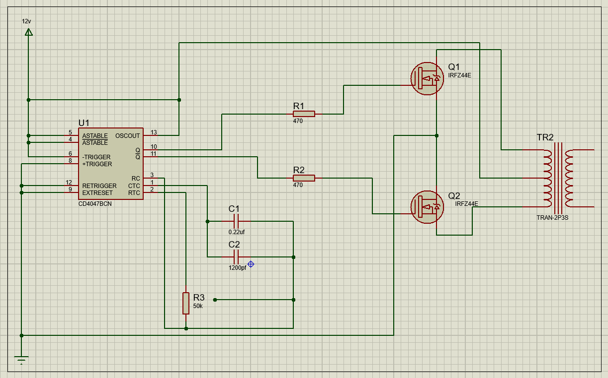

Materias integradoras:
- Telematica.
- Electronica de potencia.
- Dispositivos de interconexión.
Descripcion del proyecto:
El proyecto a presentar es un inversor de voltaje el cual tendra en la entrada una señal de 12Vdc y a la salida se espera tener una salida de 120 Vac; adicionalmente contara con un pequeño circuito que permite realizar un control remoto de la temperatura, el cual se implemento mediante el uso de una ESP32 conectada a internet y mediante protocolos MQTT se obtendran los valores de temperatura en esta pagina web.
Se utilizaran servicios MQTT del servidor Thingspeak para traer las lecturas del sensor de temperatura.
Inversor:
El inversor utilizado fue diseñado en clase de Electronica de Potencia y simulado inicalmente en proteus.
El inversor se armo basicamente utilizando los siguientes elementos:
- CD4047 es un multi vibrador con muy bajo consumo de energía, puede operar en multivibrador monoestable y también en multivibrador estable. en el modo multivibrador astable puede operar en modo de funcionamiento libre o en modo gatable y también proporciona una buena estabilidad de frecuencia estable. Puede generar un ciclo de trabajo del 50% que creará un pulso, que se puede aplicar al circuito del inversor.
- IRFZ244 es una puerta de silicio de modo mejorado N-channel Transistor de efecto de campo (MOSFET). Se utilizan principalmente en reguladores de conmutación, convertidores de conmutación, controladores de relé, etc. La razón para usarlos en el circuito INVERSOR es porque es un transistor de conmutación alta, puede funcionar con muy poca potencia de accionamiento de puerta y tener alta impedancia de entrada.
- Transformador conectado a la salida de los IRFZ244 y recibira los pulsos generados por estos para lograr generar elevar el voltaje de 12v a 120v.
- Cuenta ademas con condensadores, resistencias y potenciometros que en conjunto hacen que el sistema funcione de manera correcta.
Monitoreo de la temperatura:
Para tener seguimiento de la temperatura se realizo un montaje mediante el uso de una ESP32 y un sensor de temperatura DHT11; la ESP32 se programa en el IDE de Arduino y se conecta a internet para tener monitoreo remoto desde el broker MQTT de Thingspeak. Este broker permite la extraccion de datos para lograr tener alojado en la pagina en tiempo real el monitoreo de la temperatura; Adicionalemente se implemento una pantalla Nokia 5110 para tener visualización directamente sobre el elemento.

Descripción del codigo
Como se mencionó anteriormente se utilizo el IDE de Arduino para la programación de la ESP32, se incluyeron las librerías necesarias y se estableció la comunicación con Thingspeak.
Librerias
Se incluyeron las librerias siguientes librerias:
- Wire.h Permite la conexión de la ESP32 a internet.
- DHT.h Conexión del sensor DHT11 y extraer sus valores.
- Adafruit GFX.h y Adafruit PCD8544.h Permite la conexión de la patalla nokia.
Variables globales
Se crearon las varibles globales en las cuales se almacenan los datos para hacer la conexión a la red, una variable de tiempo y las variables donde se almacenan los datos de acceso entregados por Thingspeak.
Conexión a WiFi
En este se incluye el metodo de conexión a la red WiFi y se establece un bluque en caso de no tener la conexión.
Thingspeak
En este apartado se configura la conexión y el envio de datos a Thingspeak, se configuran todos los datos y utilizando la variable temp se envian los datos que seran entregados por al servidor.
Lectura de temperatura y visualización de datos en pantalla Nokia 5110
Se incluye la lectura de la temperatura mediante el metodo dht.readTemperature() ademas se da el uso del tiempo currentMillis para establecer los tiempos en los cuales se van a enviar los datos; mediante los metodos de la libreria Adafruit PCD8544.h se logran imprimir en pantalla la dirección IP y la temperatura.
Grafica